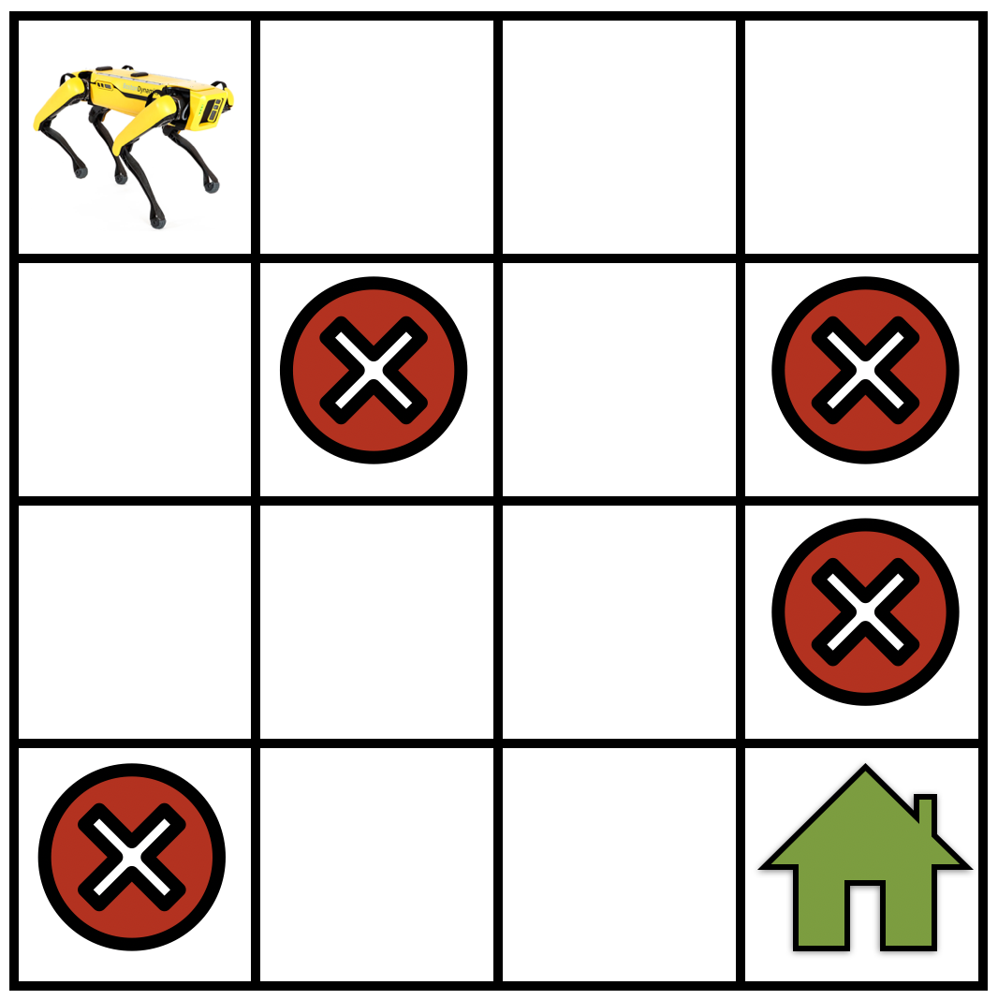

Markov Decision Process (MDP)¶
Trong phần này, chúng ta sẽ thảo luận cách mô hình hóa các bài toán học tăng cường bằng Markov decision process (MDP) và mô tả chi tiết các thành phần khác nhau của MDP.
Định nghĩa một MDP¶
Markov decision process (MDP) [BellmanMDP] là một mô hình về cách trạng thái của một hệ thống tiến hóa khi các hành động khác nhau được áp dụng lên hệ thống. Một vài đại lượng khác nhau kết hợp lại để tạo thành một MDP.

- Gọi \(\mathcal{S}\) là tập các trạng thái trong MDP. Như một ví dụ cụ thể, xem fig_mdp về một robot đang điều hướng trong gridworld. Trong trường hợp này, \(\mathcal{S}\) tương ứng với tập các vị trí mà robot có thể ở tại bất kỳ bước thời gian nào.
- Gọi \(\mathcal{A}\) là tập các hành động mà robot có thể thực hiện ở mỗi trạng thái, ví dụ "đi thẳng", "rẽ phải", "rẽ trái", "ở nguyên vị trí", v.v. Các hành động có thể thay đổi trạng thái hiện tại của robot sang một trạng thái khác trong tập \(\mathcal{S}\).
- Có thể xảy ra trường hợp chúng ta không biết robot di chuyển chính xác như thế nào mà chỉ biết gần đúng. Trong học tăng cường, chúng ta mô hình hóa tình huống này như sau: nếu robot thực hiện hành động "đi thẳng", có thể có một xác suất nhỏ rằng nó vẫn ở trạng thái hiện tại, một xác suất nhỏ khác rằng nó "rẽ trái", v.v. Về mặt toán học, điều này tương đương với việc định nghĩa một "hàm chuyển tiếp" \(T: \mathcal{S} \times \mathcal{A} \times \mathcal{S} \to [0,1]\) sao cho \(T(s, a, s') = P(s' \mid s, a)\), dùng xác suất có điều kiện để đạt đến trạng thái \(s'\) khi robot đang ở trạng thái \(s\) và thực hiện hành động \(a\). Hàm chuyển tiếp là một phân phối xác suất, do đó ta có \(\sum_{s' \in \mathcal{S}} T(s, a, s') = 1\) với mọi \(s \in \mathcal{S}\) và \(a \in \mathcal{A}\), tức là robot phải đi đến một trạng thái nào đó nếu nó thực hiện một hành động.
- Bây giờ chúng ta xây dựng một khái niệm về hành động nào hữu ích và hành động nào không bằng cách dùng khái niệm "phần thưởng" \(r: \mathcal{S} \times \mathcal{A} \to \mathbb{R}\). Ta nói rằng robot nhận được phần thưởng \(r(s,a)\) nếu robot thực hiện hành động \(a\) tại trạng thái \(s\). Nếu phần thưởng \(r(s, a)\) lớn, điều này cho thấy thực hiện hành động \(a\) tại trạng thái \(s\) hữu ích hơn để đạt mục tiêu của robot, tức là đi đến ngôi nhà màu xanh lá. Nếu phần thưởng \(r(s, a)\) nhỏ, thì hành động \(a\) ít hữu ích hơn cho việc đạt mục tiêu này. Điều quan trọng cần lưu ý là phần thưởng được thiết kế bởi người dùng (người tạo ra thuật toán học tăng cường) với mục tiêu đã định.
Return và hệ số chiết khấu¶
Các thành phần khác nhau ở trên cùng nhau tạo thành một Markov decision process (MDP) $\(\textrm{MDP}: (\mathcal{S}, \mathcal{A}, T, r).\)$
Bây giờ hãy xét tình huống robot bắt đầu ở một trạng thái cụ thể \(s_0 \in \mathcal{S}\) và tiếp tục thực hiện các hành động để tạo ra một quỹ đạo $\(\tau = (s_0, a_0, r_0, s_1, a_1, r_1, s_2, a_2, r_2, \ldots).\)$
Tại mỗi bước thời gian \(t\), robot ở trạng thái \(s_t\) và thực hiện hành động \(a_t\), dẫn đến phần thưởng \(r_t = r(s_t, a_t)\). Return của một quỹ đạo là tổng phần thưởng mà robot thu được dọc theo quỹ đạo đó $\(R(\tau) = r_0 + r_1 + r_2 + \cdots.\)$
Mục tiêu trong học tăng cường là tìm một quỹ đạo có return lớn nhất.
Hãy nghĩ đến tình huống robot tiếp tục di chuyển trong gridworld mà không bao giờ đến được vị trí mục tiêu. Trong trường hợp này, chuỗi trạng thái và hành động trong một quỹ đạo có thể dài vô hạn và return của bất kỳ quỹ đạo dài vô hạn nào như vậy sẽ là vô hạn. Để giữ cho công thức học tăng cường vẫn có ý nghĩa ngay cả với các quỹ đạo như vậy, chúng ta đưa vào khái niệm hệ số chiết khấu \(\gamma < 1\). Ta viết return đã chiết khấu là $\(R(\tau) = r_0 + \gamma r_1 + \gamma^2 r_2 + \cdots = \sum_{t=0}^\infty \gamma^t r_t.\)$
Lưu ý rằng nếu \(\gamma\) rất nhỏ, các phần thưởng mà robot kiếm được trong tương lai xa, chẳng hạn \(t = 1000\), bị chiết khấu mạnh bởi hệ số \(\gamma^{1000}\). Điều này khuyến khích robot chọn các quỹ đạo ngắn để đạt mục tiêu, cụ thể là đi đến ngôi nhà màu xanh lá trong ví dụ gridworld (xem fig_mdp). Với các giá trị lớn của hệ số chiết khấu, chẳng hạn \(\gamma = 0.99\), robot được khuyến khích khám phá rồi tìm quỹ đạo tốt nhất để đi đến vị trí mục tiêu.
Thảo luận về giả định Markov¶
Hãy nghĩ đến một robot mới, trong đó trạng thái \(s_t\) là vị trí như trên nhưng hành động \(a_t\) là gia tốc mà robot áp dụng lên bánh xe thay vì một lệnh trừu tượng như "đi thẳng". Nếu robot này có vận tốc khác không tại trạng thái \(s_t\), thì vị trí kế tiếp \(s_{t+1}\) là một hàm của vị trí quá khứ \(s_t\), gia tốc \(a_t\), cũng như vận tốc của robot tại thời điểm \(t\), vốn tỉ lệ với \(s_t - s_{t-1}\). Điều này cho thấy chúng ta nên có
"some function" trong trường hợp của chúng ta sẽ là định luật chuyển động của Newton. Điều này khá khác với hàm chuyển tiếp của chúng ta, vốn chỉ phụ thuộc vào \(s_t\) và \(a_t\).
Các hệ Markov là tất cả các hệ trong đó trạng thái kế tiếp \(s_{t+1}\) chỉ là một hàm của trạng thái hiện tại \(s_t\) và hành động \(a_t\) được thực hiện tại trạng thái hiện tại. Trong các hệ Markov, trạng thái kế tiếp không phụ thuộc vào những hành động đã được thực hiện trong quá khứ hay những trạng thái mà robot đã ở trong quá khứ. Ví dụ, robot mới có hành động là gia tốc ở trên không có tính Markov vì vị trí kế tiếp \(s_{t+1}\) phụ thuộc vào trạng thái trước đó \(s_{t-1}\) thông qua vận tốc. Có thể có vẻ bản chất Markov của một hệ là một giả định hạn chế, nhưng không phải vậy. Markov Decision Process vẫn có khả năng mô hình hóa một lớp rất lớn các hệ thực. Ví dụ, với robot mới của chúng ta, nếu ta chọn trạng thái \(s_t\) là bộ \((\textrm{location}, \textrm{velocity})\) thì hệ là Markov vì trạng thái kế tiếp của nó \((\textrm{location}_{t+1}, \textrm{velocity}_{t+1})\) chỉ phụ thuộc vào trạng thái hiện tại \((\textrm{location}_t, \textrm{velocity}_t)\) và hành động tại trạng thái hiện tại \(a_t\).
Tóm tắt¶
Bài toán học tăng cường thường được mô hình hóa bằng Markov Decision Process. Một Markov decision process (MDP) được định nghĩa bởi một bộ bốn thực thể \((\mathcal{S}, \mathcal{A}, T, r)\), trong đó \(\mathcal{S}\) là không gian trạng thái, \(\mathcal{A}\) là không gian hành động, \(T\) là hàm chuyển tiếp mã hóa các xác suất chuyển tiếp của MDP và \(r\) là phần thưởng tức thời thu được khi thực hiện hành động tại một trạng thái cụ thể.
Bài tập¶
- Giả sử chúng ta muốn thiết kế một MDP để mô hình hóa bài toán MountainCar.
- Tập trạng thái sẽ là gì?
- Tập hành động sẽ là gì?
- Các hàm phần thưởng khả dĩ sẽ là gì?
- Bạn sẽ thiết kế một MDP cho một trò chơi Atari như Pong game như thế nào?